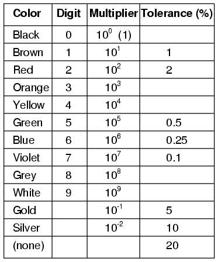
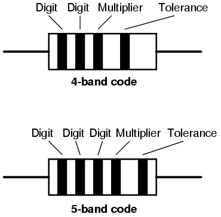
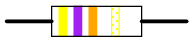
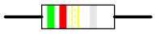
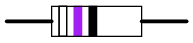
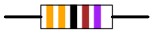
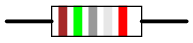
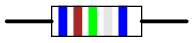

Códigos de Color
Resistor Color Codes
Los componentes y cables están codificados con colores para identificar su valor y función.

Los colores marrón, rojo, verde, azul y violeta se utilizan como códigos de tolerancia únicamente en resistencias de 5 bandas. Todas las resistencias de 5 bandas utilizan una banda de tolerancia de color. La "banda" en blanco (20%) sólo se utiliza con el código de "4 bandas" (3 bandas de colores + una "banda" en blanco).

Example #1

Una resistencia de colorAmarillo-Violeta-Naranja-OroSería 47 kΩ con una tolerancia de +/- 5%.
Example #2

Una resistencia de colorVerde-Rojo-Oro-Platasería 5,2 Ω con una tolerancia de +/- 10%.
Example #3

Una resistencia de colorBlanco-Violeta-NegroSería 97 Ω con una tolerancia de +/- 20%. Cuando ve solo tres bandas de colores en una resistencia, sabe que en realidad es un código de 4 bandas con una banda de tolerancia en blanco (20%).
Example #4

Una resistencia de colorNaranja-Naranja-Negro-Marrón-Violetasería 3,3 kΩ con una tolerancia de +/- 0,1%.
Example #5

Una resistencia de colorMarrón-Verde-Gris-Plata-Rojosería 1,58 Ω con una tolerancia de +/- 2%.
Example #6

Una resistencia de colorAzul-Marrón-Verde-Plata-Azulsería 6,15 Ω con una tolerancia de +/- 0,25%.
Códigos de colores de cableado
El cableado para circuitos derivados de distribución de energía de CA y CC está codificado por colores para identificar los cables individuales. En algunas jurisdicciones, todos los colores de los cables se especifican en documentos legales. En otras jurisdicciones, sólo unos pocos colores de conductores están codificados de esta manera. En ese caso, la costumbre local dicta los colores de los cables "opcionales".
CEI, CA:La mayor parte de Europa cumple con los códigos de colores de cableado IEC (Comisión Electrotécnica Internacional) para circuitos derivados de CA. Estos se enumeran en la tabla below. Los códigos de colores más antiguos de la tabla reflejan el estilo anterior que no tenía en cuenta la rotación de fase adecuada. El cable de tierra de protección (indicado como verde-amarillo) es verde con una franja amarilla.
IEC (most of Europe) AC power circuit wiring color codes.
| Función | etiqueta | Color, CEI | Color, IEC antiguo |
|---|---|---|---|
| Tierra protectora | PE | verde-amarillo | verde-amarillo |
| Neutral | N | azul | azul |
| Línea, monofásica | L | marrón | marrón o negro |
| Línea, trifásica | L1 | marrón | marrón o negro |
| Línea, trifásica | L2 | negro | marrón o negro |
| Línea, trifásica | L3 | gris | marrón o negro |
Reino Unido, CA:El Reino Unido sigue ahora los códigos de color de cableado de CA IEC. Mesa belowlos enumera junto con los códigos de colores nacionales obsoletos. Para agregar cableado de color nuevo al cableado de color antiguo existente, consulte Cook.[PCk]
UK AC power circuit wiring color codes.
| Función | etiqueta | Color, CEI | Color antiguo del Reino Unido |
|---|---|---|---|
| Tierra protectora | PE | verde-amarillo | verde-amarillo |
| Neutral | N | azul | negro |
| Línea, monofásica | L | marrón | red |
| Línea, trifásica | L1 | marrón | red |
| Línea, trifásica | L2 | negro | amarillo |
| Línea, trifásica | L3 | gris | azul |
EE. UU., CA:El Código Eléctrico Nacional de EE. UU. solo exige el color blanco (o gris) para el conductor de alimentación neutro y cobre desnudo, verde o verde con franja amarilla para la tierra de protección. En principio, para los conductores de potencia se pueden utilizar otros colores distintos de estos. Los colores adoptados como práctica local se muestran en la Tabla below. El negro, el rojo y el azul se utilizan para 208 VCA trifásicos; marrón, naranja y amarillo se utilizan para 480 VCA. Los conductores de tamaño superior a 6 AWG solo están disponibles en negro y tienen cinta de color en los extremos.
US AC power circuit wiring color codes.
| Función | etiqueta | color, común | Color, alternativo |
|---|---|---|---|
| Tierra protectora | PG | desnudo, verde o verde-amarillo | verde |
| Neutral | N | blanco | gris |
| Línea, monofásica | L | negro o rojo (segundo caliente) | |
| Línea, trifásica | L1 | negro | marrón |
| Línea, trifásica | L2 | red | naranja |
| Línea, trifásica | L3 | azul | amarillo |
Canadá:El cableado canadiense se rige por el CEC (Código Eléctrico Canadiense). Ver tabla below. La tierra de protección es verde o verde con franja amarilla. El neutro es blanco, los cables monofásicos activos (vivos o activos) son negros y rojos en el caso de un segundo activo. Las líneas trifásicas son rojas, negras y azules.
Canada AC power circuit wiring color codes.
| Función | etiqueta | color, común |
|---|---|---|
| Tierra protectora | PG | verde o verde-amarillo |
| Neutral | N | blanco |
| Línea, monofásica | L | negro o rojo (segundo caliente) |
| Línea, trifásica | L1 | red |
| Línea, trifásica | L2 | negro |
| Línea, trifásica | L3 | azul |
CEI, CC:Las instalaciones de energía de CC, por ejemplo, los centros de datos informáticos y de energía solar, utilizan códigos de colores que siguen los estándares de CA. El estándar de color IEC para cables de alimentación de CC se enumera en la Tabla below, adaptado de la Tabla 2, Cook.[PCk]
IEC DC power circuit wiring color codes.
| Función | etiqueta | Color |
|---|---|---|
| Tierra protectora | PE | verde-amarillo |
| 2-wire unearthed DC Power System | ||
| Positivo | L+ | marrón |
| Negativo | L- | gris |
| 2-wire earthed DC Power System | ||
| Circuito positivo (de un circuito negativo conectado a tierra) | L+ | marrón |
| Circuito negativo (de un circuito negativo a tierra) | M | azul |
| Circuito positivo (de un positivo puesto a tierra) | M | azul |
| Circuito negativo (de un positivo puesto a tierra) | L- | gris |
| 3-wire earthed DC Power System | ||
| Positivo | L+ | marrón |
| cable medio | M | azul |
| Negativo | L- | gris |
Alimentación CC de EE. UU.:El Código Eléctrico Nacional de EE. UU. (tanto para CA como para CC) exige que el conductor neutro a tierra de un sistema de energía sea blanco o gris. La tierra de protección debe estar desnuda y tener rayas verdes o verde-amarillas. Los cables activos (activos) pueden ser de cualquier otro color excepto estos. Sin embargo, la práctica común (según los inspectores eléctricos locales) es que el primer cable activo (vivo o activo) sea negro y el segundo sea rojo. Las recomendaciones en la tabla belowson de Wiles.[JWi]No hace ninguna recomendación para los colores del sistema de energía sin conexión a tierra. Se desaconseja el uso del sistema sin conexión a tierra por motivos de seguridad. Sin embargo, el rojo (+) y el negro (-) siguen el color de los sistemas puestos a tierra en la tabla.
US recommended DC power circuit wiring color codes.
| Función | etiqueta | Color |
|---|---|---|
| Tierra protectora | PG | desnudo, verde o verde-amarillo |
| 2-wire ungrounded DC Power System | ||
| Positivo | L+ | sin recomendación (rojo) |
| Negativo | L- | sin recomendación (negro) |
| 2-wire grounded DC Power System | ||
| Circuito positivo (de un circuito negativo conectado a tierra) | L+ | red |
| Circuito negativo (de un circuito negativo conectado a tierra) | N | blanco |
| Circuito positivo (de un positivo puesto a tierra) | N | blanco |
| Circuito negativo (de un positivo puesto a tierra) | L- | negro |
| 3-wire grounded DC Power System | ||
| Positivo | L+ | red |
| Cable medio (grifo central) | N | blanco |
| Negativo | L- | negro |
Bibliografía
- [PCk]Paul Cook, “Harmonised colours and alphanumeric marking”, IEE Wiring Matters, Spring 2004 at http://www.iee.org/Publish/WireRegs/IEE_Harmonized_colours.pdf
- [JWi]John Wiles, “Photovoltaic Power Systems and the National Electrical Code: Suggested Practices”, Southwest Technology Development Institute, New Mexico State University, March 2001 at http://www.re.sandia.gov/en/ti/tu/Copy%20of%20NEC2000.pdf
Lecciones en circuitos eléctricoscopyright (C) 2000-2023 Tony R. Kuphaldt, según los términos y condiciones delCC BY License.